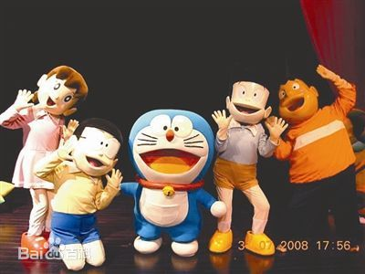
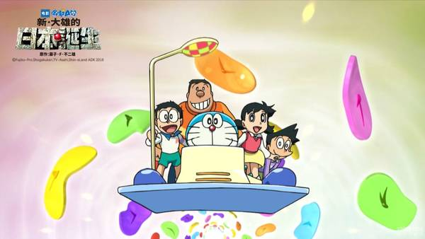
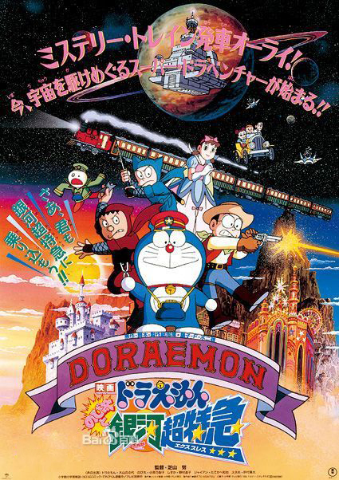

三维空间

宇宙诞生前，鸟世界的怪兽腓尼基亚被传送到这个宇宙还未诞生的空间。
火星
36亿年前，"播种者"在地球和火星等上播下"生物之种"。
劳亚大陆
哆啦a梦公仔及玩具
3亿年前，大雄将野狗野猫和小狗阿一通过时光机放到这个时代自己生活，并用进化光线进化。2千万年前，阿一制造出时光机器欲见大雄，结果碰到时光乱流年龄倒退，时间机器坠毁。猫杰拉一行发现时光机残骸。
2千万年前，彗星群将撞击地球。哆啦A梦本应回3亿年前结果碰到时光乱流来到这个时代并损坏了时光机器。野比碰到了返老还童、失忆的阿一和寻找父母并想揭发猫杰拉乐园阴谋的朋友们。猫杰拉制造时光机欲去到人类的时代想支配人类，后阴谋被野比一行粉碎，最后猫狗王国成功离开地球，哆啦A梦一行也成功回到了自己的时代。
北美日本
约1亿年前的恐龙时代：
1、大雄将自己养的恐龙放生，结果在恐龙时代发现了恐龙杀手，后将其歼灭，其老大和黑衣人使用时光机逃避时空警察的追捕。
2、哆啦美带领野比世修一行来到这个时代，碰到了恐龙保护者，并认识小恐龙小祝等。
落基山脉
6500万年前，地底恐龙人使用时光机传送到这个时代欲消灭杀死恐龙的敌人，结果误解了哆啦A梦等人；彗星撞击地球，哆啦A梦使用地下室制造机造出一个巨大的地下室，之后哆啦A梦等人将剩下的恐龙引到地底生活，那个地下室后被恐龙人称作"圣地"。
日本中国
约7万年前，大雄一伙本想在这个时代创造自己的天地，结果碰到了原始人、光明族少年古古儿，并协助击败了破坏历史的时空犯罪者巨尊比和其领导的黑暗族。
麦加托比亚
约3万年前，博士造出机器人阿姆和伊姆，麦加托比亚国诞生。
百慕大三角
7000年前，海底文明亚特兰蒂斯因为鬼角弹试验失败而导致全国灭亡，其设立的百慕大三角的能量保护罩仍然生效。军事电脑波塞冬和其部队仍然活动。
非洲刚果丛林
5000年前，大魔境里的狗王国国王汪汪一世宣布停止武器研究，并建立了巨神像。
中国
629年，唐玄奘从长安出发；大雄一行在这个时代误将游戏机里的西游记妖怪放了出来，至此世界变成了妖怪的世界，后来五人为了拯救世界，决定演一场真的西游记，最后大家消灭了妖怪头子牛魔王，世界得以拯救，孙悟空等人的故事便流传下来。
阿拉伯
794年，为救掉进一千零一夜里面的静香，众人来到了巴格达。他们碰上了强盗头子，被投入海中，四次元口袋也丢失，所幸碰到了辛巴达才得以活命。静香不久也回到众人身边。
火星
1000年前，"播种者"在火星上培育的生物由于彗星的撞击导致毁灭。
日本
战国时代，大雄本想帮助祖先野比作，结果小夫的祖先从那时起名扬天下。
约642年前，野比在时光照相机的照片上发现桃太郎，因而来到这个时代，结果种种巧合使野比成为了真正的桃太郎，他们碰到了被村民误认为鬼的荷兰船长并将其送回荷兰。
约1580年，受濑和的委托哆啦美来到这个时代碰见了野比大平等人组成的少年山贼团。他们后来惩罚了当地的地主，地主悔改。哆啦美发现大平并不是一个傻瓜。
大西洋
约17世纪，由于时空错乱机器猫一行来到了海盗时代，遇见了寻找杰克及杰克父亲一队的吉特船长和贝蒂等一行人。在这个时代哆啦A梦等人发现了制造DNA改造生物的时空犯罪者卡修一行，后在时空警察的海豚露菲伊协助下消灭。怪物力巴亚桑失踪。
宇宙
约300年前，银河漂流船队成立，开始寻找适合居住的星球。
日本
哆啦a梦壁纸分享
约150年前，大雄等人来此探访家谱传说中的吹牛大王雄六兵卫，后雄六被带入20世纪，回去之后同时代的人都认为其痴人说梦，称其为"吹牛大王"。
1935年1月24日，野比助出生。
1964年5月2日，静香出生
1964年6月15日，胖虎出生
1964年8月7日，大雄出生
1965年2月29日，小夫出生。
约1967年，安娜移民国外、野比奶奶逝世。
1989年，大雄为了与静香结婚，坐航时机来到这里，却没有帮上静香的忙，反而还被静香救了。
2011年，时空邮递员误解20世纪大雄写的地址，将小机器猫邮递到这个时代的野比家，结果被野比雄助等人滥用，险些闹出生命危险被大雄等人所救。胖虎已将自己的百货店扩大成商场。
2112年9月3日，哆啦A梦被制造出来，制造过程中被恐龙杀手在时空跳跃逃跑中产生的电波击中受伤。
2114年12月21日，哆啦美诞生。
2114年12月25日，迷你哆啦A梦制造出来，并通过哆啦A梦学校寺尾台校长送给哆啦A梦。
2116年，哆啦美毕业。
22世纪：
考古学家史提姆博士预测到风兽马佛卡会在21世纪某一天复活。
麦加托比亚国
1973年，麦加托比亚国家举行三万年国庆。
练马区
1974年，哆啦A梦从未来来帮助野比。故事开始了。
奇迹之岛
22世纪大雄将巨鸟莫亚送去奇迹之岛，并发现了黄金独角仙的秘密。
道具博物馆
22世纪大雄为找到哆啦A梦被偷走的铃铛，于是来到了秘密道具博物馆。